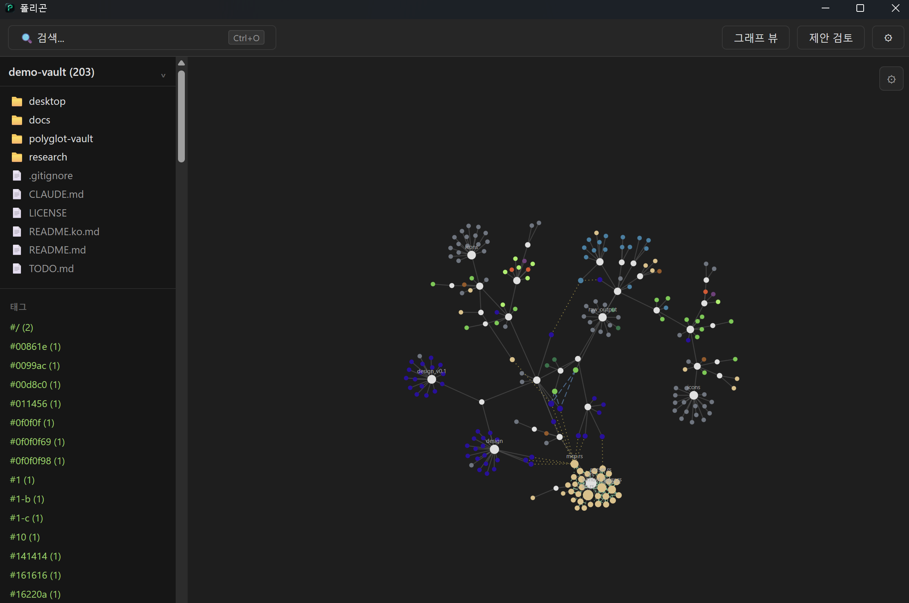

Polyglot Local Vault indexes the files on your machine into a single local Vault, searches them instantly, and gives the things inside them — functions, headings, config keys — their own addresses. Move a file or rewrite the code, and those connections survive.
Polyglot Local Vault는 내 컴퓨터의 파일을 하나의 로컬 Vault로 묶어 초고속으로 검색하고, 파일 안의 함수·문단·설정 키까지 고유 주소로 연결하는 데스크톱 앱이다. 파일을 옮기거나 코드를 고쳐도 그 연결은 살아남는다.
Which document explained that setting. Which file and line holds that function. What this code is tied to. Right now a person has to remember all of it — and the moment a folder changes, that memory breaks.
어느 문서에서 그 설정을 설명했는지, 그 함수가 어느 파일 몇 번째 줄인지, 이 코드가 어느 문서와 이어져 있는지 — 지금은 전부 사람이 기억하고 있어야 한다. 폴더가 바뀌는 순간 그 기억은 끊긴다.
Addresses point at things inside files, not at files. Link through one and the link follows the target when it moves.
파일이 아니라 파일 안의 것에 주소가 붙는다. 이 주소로 연결하면 파일이 이동해도 링크가 따라온다.
Filename search across 100,000 files at a p95 of 7.4 ms — results land before you finish typing. The full-text index takes 5.5% of what the source does.
10만 개 파일에서 이름 검색이 p95 7.4밀리초. 타이핑이 끝나기 전에 결과가 나온다. 내용 전문 검색 인덱스는 원본 대비 5.5%만 차지한다.
Move or rename a file and the connection repairs itself — 95.7% of file links and 80.0% of symbol links survive with no human involved, 93.6% counting one click.
파일을 옮기거나 이름을 바꿔도 연결이 자동 복구된다 — 파일 링크 95.7%, 함수·제목 같은 내부 심볼 링크 80.0%가 사람 손 없이 살아남고, 한 번 클릭까지 포함하면 93.6%다.
It reads code names mentioned in docs, paths written in config, and imports in source to find candidates. Proposals only land once you approve them.
문서에 적힌 코드 이름, 설정에 적힌 경로, 소스의 import를 읽어 관계 후보를 찾아낸다. 제안은 승인해야 반영된다.
An external AI can read this structure over MCP. Measured on 20 natural-language questions: 1.05 calls on average, 20/20 correct, 17.6× fewer tokens than grep.
MCP로 외부 AI가 이 지식 구조를 읽을 수 있다. 자연어 질문 20건 실측에서 평균 1.05회 호출로 정답 20/20, grep 방식 대비 토큰 17.6배 절감.
Taken from 18 real public repositories — 130K commits, 230K files. No synthetic data.
공개 저장소 18개 · 커밋 13만 · 파일 23만에서 측정했다. 합성 데이터는 쓰지 않았다.

Code is split by function and class, documents by heading, config and tables by key and column — and each piece gets its own address.
코드는 함수·클래스 단위로, 문서는 제목 단위로, 설정과 표는 키와 컬럼 단위로 쪼개 각각에 주소를 붙인다.
Search, structure extraction, and relationship inference are all deterministic algorithms. The same input always gives the same result, it works with the network off, and every connection can be explained.
검색·구조 추출·관계 계산은 전부 결정론적 알고리즘이 한다. 같은 입력이면 언제나 같은 결과가 나오고, 인터넷이 끊겨도 돌아가고, 왜 그렇게 연결됐는지 설명할 수 있다.
AI attaches on top of that over MCP, as an option. Take it away and the app still works.
AI는 그 위에 MCP로 붙는 선택 사항이다. 빼도 앱은 그대로 동작한다.
A separate stdio binary — no desktop app required. It exposes four tools: search, read, neighbors, link. Download it and point your MCP client's config at it.
데스크톱 앱과 별개인 stdio 바이너리다. search·read·neighbors·link 네 개 툴을 제공한다. 다운로드해서 MCP 클라이언트 설정에 경로만 넣으면 된다.
19 design documents were settled before implementation began. Today: 6,850 lines of core, 1,146 lines of desktop, 163 tests passing.
설계 문서 19개를 먼저 확정하고 구현에 들어갔다. 현재 코어 6,850줄 + 데스크톱 1,146줄, 테스트 163개 통과.